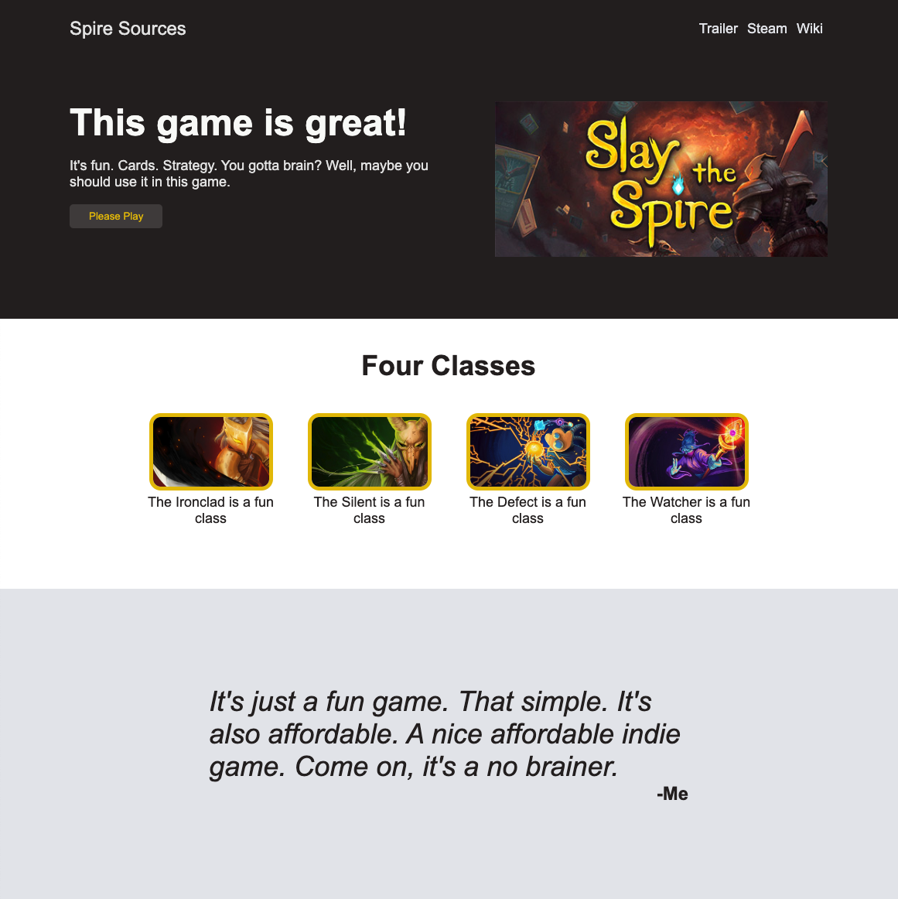

Other projects
A selection of other works of mine
My CSS flex project
The Assignment: To build a landing page using my foundational CSS knowledge, using Flex for most of layout work. This was also built using a layout image as reference.
Personal Goals: Once my site looked like the reference, I decided it would be fun to add my own custom theme. Slay the Spire was a video game I was playing at the time, and I had fun using the game as inspiration for a color scheme and image layout.
A selection of other works of mine